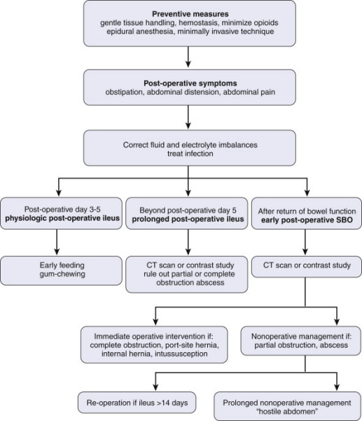

Impaired function of the gut in the absence of a mechanical
obstruction.
- pseudo-obstruction mainly pertains to colon Paralytic ileus is not
after surgery cf post-operative
ileus Prolonged post-operative ileus
lasts 5d+
Pathophysiology Multifactorial
with the
principal mediators being:
- immunologic cell activation
- autonomic dysfunction (both
primarily and as part of the surgical stress response)
- agonism of exogenous
narcotics at gut opioid-receptors
- modulation of gastrointestinal hormone
activity
- electrolyte derangements.
A final common pathway for these
effectors is impaired contractility and gut wall oedema.
INVESTIGATIONS
Biochemistry
Electrolyte derangements contribute and that should be tested.
FBC
WCC may suggest contributing pathology
Imaging
Plain films usually show gas in segments of both the small bowel and
large bowel
CT with contrast is usually helpful but shd be used selectively.
- high sensitivity for differentiating obstruction from ileus
- and contrast may be therapeutic by osmotic properties.
- also exclude intra-abdominal pathology that may be contributing
e.g. leaks or abscess.
Prevention
see below; critical to reducing incidence of ileus.

1. Differentiating post-op ileusand early bowel obstruction
E.g. due to hernia, dense early adhesions or misplaced sutures Concern for SBO if:
A more dramatic presentation:
- intense pain
- feculent emesis
- rapidly progressive pain and distension
2. NG tube?
Generally not in routine ileus.
Studies show that morbidity of aspiration and discomfort outweigh
benefits
3. Drugs? Several
have been evaluated, e.g. metoclopramide,
cisapride and erythromycin.
- may be useful in selected cases where gastric emptying is the
problem, but not efficacious in ileus in general
Opioid antagonists are peripherally acting; do not cross the BBB.
- e.g alvimopan, methylnaltrexone
- evidence for use in speeding post op recovery in bowel surgery and
hysterectomy.
- however uncertain cardiovascular and neoplastic risks with
alvimopam; approved for short term use and not prolonged ileus